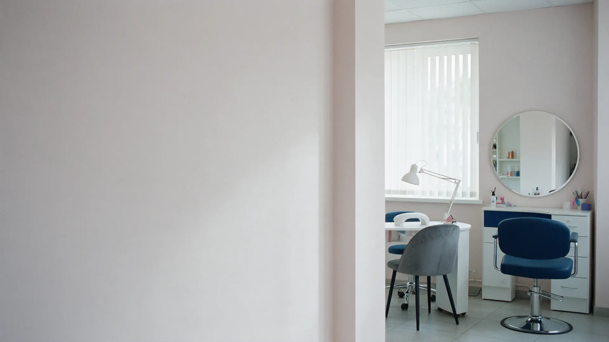
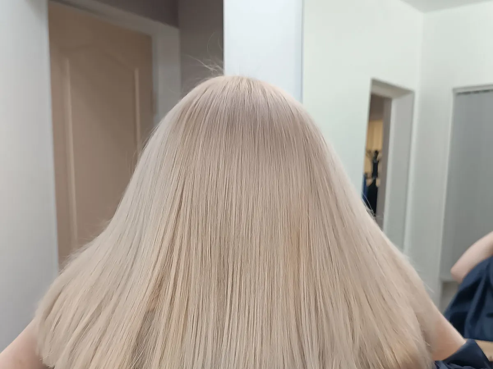
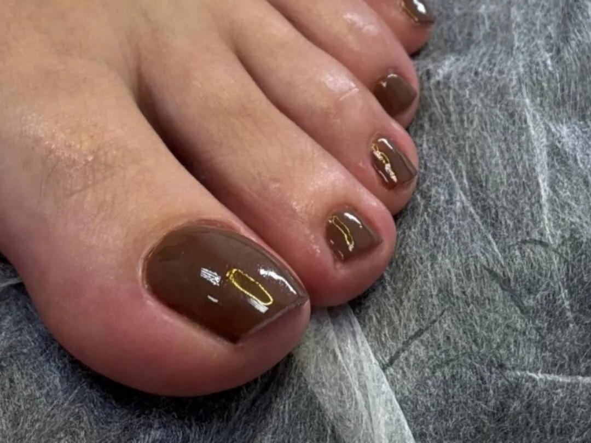
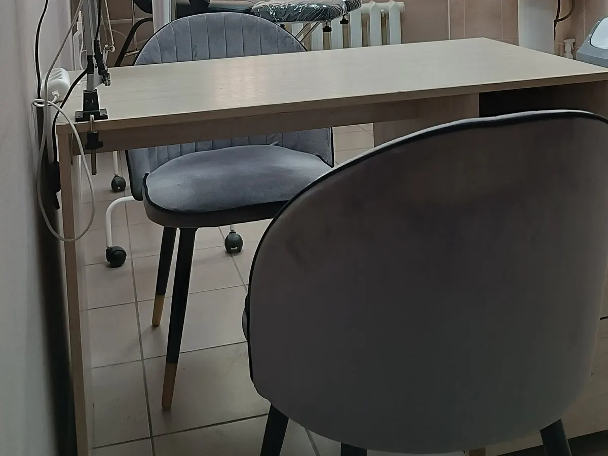

Салон красоты на Чепецкой, 9Б
Салон красоты в Глазове: маникюр, стрижка и уход в одном месте
Маникюр, педикюр, наращивание ногтей, парикмахерские услуги и косметология. Рейтинг 4,3 на Яндекс Картах, 9 отзывов. Лучше записаться заранее.

- Рейтинг 4,3 на Яндекс Картах, 25 оценок
- Ногти, парикмахерские услуги, косметология, шугаринг
- Клиенты пишут: приветливые мастера, быстро, недорого
Цены на услуги
Цены с карточки на Яндекс Картах. Раздел давно не обновлялся, точную сумму назовут при записи.
Парикмахерские услуги
- Женская стрижкадо 550 ₽от 450 ₽
- Мужская стрижкадо 500 ₽от 350 ₽
- Окрашивание волос1 000 ₽
Ногти
- Маникюр, педикюр600 ₽
- Наращивание ногтейуточнить
Косметология и другое
- Уход за лицом, массаж лицауточнить
- Шугаринг и депиляция лицауточнить
Цены на остальные услуги назовут при записи.
Как записаться
- 01
Выбрали услугу
Цены на основные услуги - в прайсе выше.
- 02
Записались заранее
Клиент пишет: свободные места есть не всегда, лучше записаться заранее.
- 03
Подтвердили время
По телефону +7 (904) 277-05-45 или во ВКонтакте.
- 04
Пришли
Чепецкая, 9Б. Рядом парковка, в салоне Wi-Fi.



Что пишут клиенты
Приветливые мастера
Клиент ходит в салон с самого его открытия.
Быстро и недорого
Так пишет клиентка, которой наращивали ногти подростку.
Чистый салон
Клиентка пишет: хороший, чистый салон и дружелюбные сотрудники.
Оценка клиентов 4,3
25 оценок и 9 отзывов на Яндекс Картах.
Отзывы с Яндекс.Карт
«Очень хорошие и приветливые мастера. Обслуживаюсь в этом салоне с самого его открытия. Лучше записываться за ранее так, как не всегда есть свободные места.»
Артемий · 21 июня
«Наращивали ногти подростку первый раз, всё понравилось, быстро, недорого, качественно.»
Лариса Салтыкова · 5 ноября 2025
«Замечательный мастер Анастасия. Хороший, чистый салон. Очень дружелюбные сотрудники!»
Pollyymayy · 27 июня 2025
Отзывы с карточки на Яндекс.Картах, без правок.
Контакты
- Адрес
- Чепецкая, 9Б, Глазов
- Часы
- Пн-пт 09:00-19:00, сб-вс 09:00-16:00
- Телефон
- +7 (904) 277-05-45